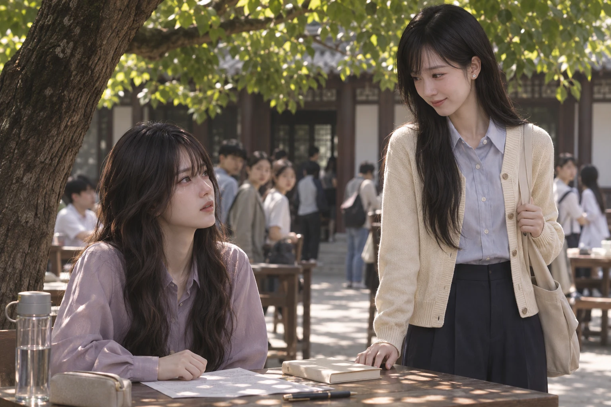
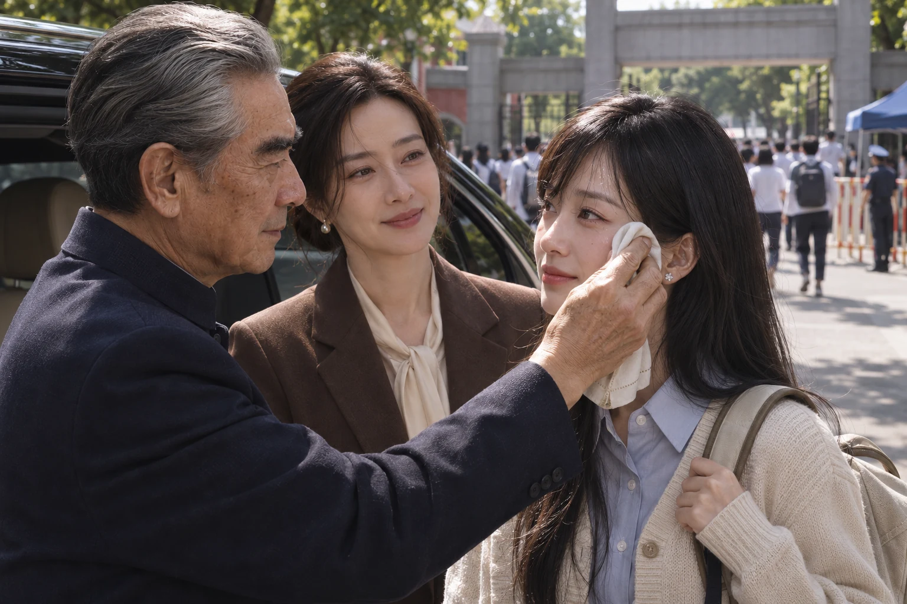
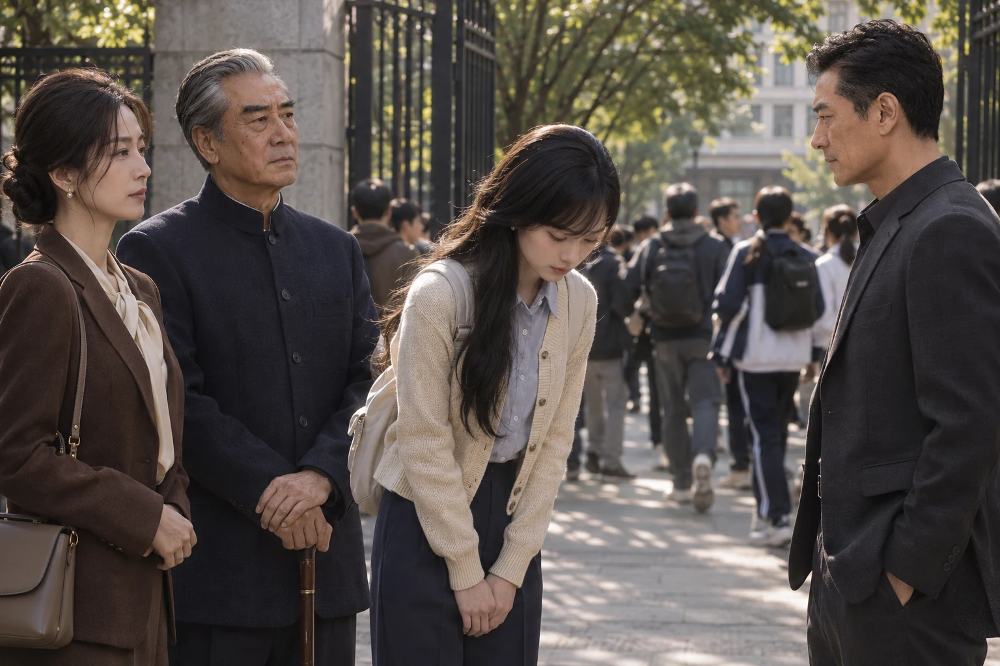
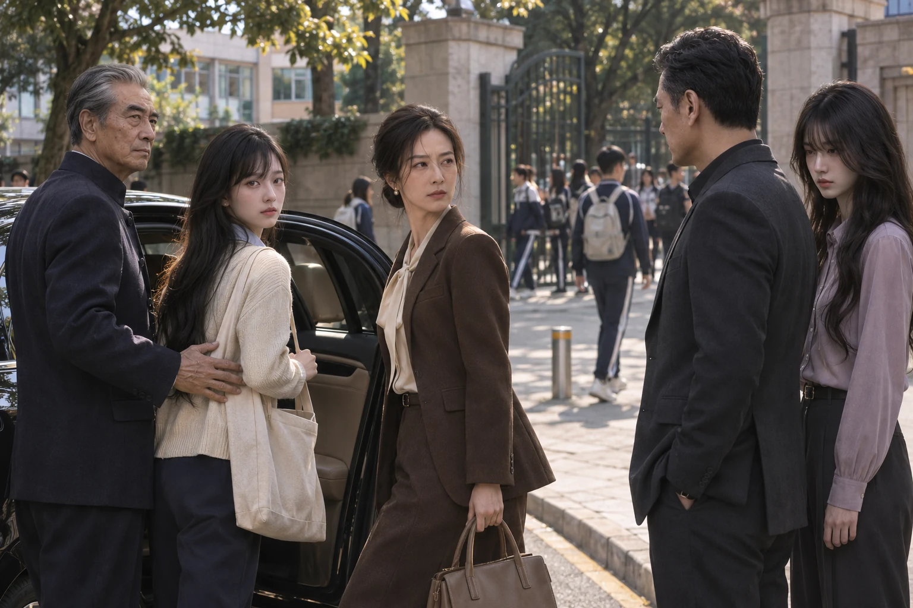
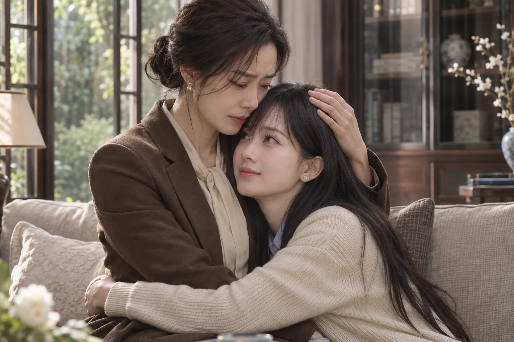

ตอนที่ 11
สร้างความแตกแยก
“ฉันรู้ว่าสิ่งที่คุณพ่อทำมันร้ายแรงมาก แต่ฉันอยากขอโอกาสให้พ่อสักครั้ง ถึงเขาจะไม่ดียังไงก็ยังเป็นพ่อ เป็นผู้ให้กำเนิด ความกตัญญูต้องมาก่อนเสมอ”
ซ่งอวิ๋น “...”
“ฉันไม่ได้ขอให้คุณซ่งอภัยจริง ๆ นะคะ เพียงต้องการขอโอกาสให้ท่านได้ทำหน้าที่พ่อบ้าง หลายวันที่ผ่านมาท่านทุกข์ใจมากจริง ๆ”
“บางทีคุณอาจเข้าใจผิดอยู่นะคะ” ซ่งอวิ๋นตีสีหน้านิ่งเรียบ ไร้รอยยิ้มหวานที่มักประดับมุมปากอยู่เป็นนิจ
“คะ?”
“คุณมาขอโอกาสให้พ่อได้ทำหน้าที่ของตัวเอง แต่หลายวันที่ผ่านมาฉันไม่ได้ปิดกั้น ท่านสามารถโทรหรือส่งข้อความมาหาฉันได้ตลอดเวลา แต่ท่านไม่ได้ทำ คุณอาจหวังดี รู้สึกว่าการเป็นลูกที่ดี ต้องช่วยพ่อแก้ไขปัญหา แต่ความหวังดีที่เจ้าตัวเขาไม่ต้องการ มันเสียเวลาเปล่า”
ซ่งหว่านใจกระตุก ซ่งอวิ๋นที่เธอรู้จักไม่ได้มีเหตุมีผลและเด็ดขาดขนาดนี้ แค่พ่อให้เธอเข้ามาอยู่ในบ้าน อีกฝ่ายก็โกรธเป็นฟืนเป็นไฟ และต้องการเรียกร้องความสนใจ โดยใช้แม่ของตนกดดัน ชาติก่อนพ่อจึงไม่อาจใส่ใจเธอเท่าที่ควร
“ไม่จริงเลยค่ะ คุณซ่งเข้าใจผิดแล้ว ที่คุณพ่อไม่ได้ติดต่อไปเพราะท่านนอนซมอยู่หลายวัน เพิ่งจะดีขึ้นเมื่อคืน”
“แบบนี้นี่เอง” หญิงสาวพยักหน้าเชิงรับรู้ “เอาเป็นว่าฉันไม่ได้ปิดกั้นถ้าท่านต้องการทำหน้าที่พ่อ แต่ทุกอย่างต้องใช้เวลาค่ะ คุณจะเอาความกตัญญูมากดดันให้ฉันต้องทำเหมือนไม่มีอะไรเกิดขึ้น แล้วกลับไปยิ้มแย้มกับพ่อเหมือนเดิม ยังไงมันก็เป็นไปไม่ได้”
ซ่งหว่านลนลานขึ้นมาทันที ดวงตาเริ่มแดงเรื่อ “คุณเข้าใจเจตนาของฉันผิดแล้วนะคะ ฉันไม่ได้ตั้งใจเอาความกตัญญูมากดดันคุณเลย ฉันก็แค่รู้สึกผิดที่เกิดมาแล้วกลายเป็น-”
“จะเพราะอะไรก็แล้วแต่ ตอนนี้ฉันรับรู้แล้วว่าคุณมาขอโอกาสให้คุณพ่อ เท่านี้ก็น่าจะพอแล้วใช่ไหมคะ” ซ่งอวิ๋นทนมองอีกฝ่ายบีบน้ำตาต่อไม่ไหว จึงลุกขึ้นยืนพร้อมแย้มยิ้มอ่อนโยน เพื่อไม่ให้คนโดยรอบเข้าใจกันไปเองว่าอีกฝ่ายถูกเธอทำร้ายจิตใจ

อาจเพราะแววตาซ่งหว่านตอนที่เธอถูกดินกลบใบหน้านั่นซ้อนทับขึ้นมาไม่หยุด พอเห็นอีกฝ่ายแสดงละครได้อย่างแนบเนียน เธอจึงพะอืดพะอมอยากอาเจียน
“เดี๋ยวสิคะ.. ฉัน” ซ่งหว่านหงุดหงิดใจ น้ำตาเธอยังไม่หยดลงมาเลย แต่อีกฝ่ายกลับสะพายกระเป๋าเสียแล้ว
“ขอบคุณสำหรับความเป็นห่วงและหวังดีนะคะ” ซ่งอวิ๋นว่าแล้วก็ก้มศีรษะให้เล็กน้อยตามมารยาท แล้วสะพายกระเป๋าเดินจากมา
สายตาอยากรู้อยากเห็นยังคงจ้องมองมาไม่หยุด หญิงสาวรับรู้ได้ว่าซ่งหว่านเดินตามมาติด ๆ แต่อีกฝ่ายไม่ได้พูดอะไร
ผู้เฒ่าซ่งกุมหัวไม้เท้า พลางชะเง้อคอมองหาหลานสาวหลายครั้ง เขารออยู่หน้าสนามสอบตลอดทั้งวัน ขณะที่ซ่งเหวินเพียรพยายามอย่างยิ่งในการเข้ามาหาเขา เดี๋ยวเอาน้ำ เดี๋ยวเอาข้าวมาให้ ทำตัวเป็นลูกชายที่ดี แต่ชายชราไม่แตะอาหารและน้ำเหล่านั้นแม้แต่น้อย
“คุณปู่ คุณแม่” ซ่งอวิ๋นออกจากสนามสอบเห็นปู่กับแม่รอท่าอย่างเป็นห่วง ความขุ่นมัวในอกพลันมลายหายไปทันควัน เธอยิ้มแฉ่งแล้วเร่งฝีเท้าเข้าไปหาพวกท่านทันที
“เป็นยังไงบ้าง ยากมากไหมลูก หน้าดูซีด ๆ นิดหน่อยนะ” โจวจิ่วถามไถ่ลูกสาว สายตาเหลือบไปเห็นซ่งหว่านเดินออกมาเช่นกัน แต่เธอเลือกจะเมินเฉยไม่สนใจ
เด็กคนนี้ไม่ผิดอะไร เธอไม่ควรทำร้ายเด็กคนหนึ่ง แต่ให้เธอรับญาติดีด้วย หัวใจเธอก็รับมันไม่ไหวเหมือนกัน
“ข้อสอบก็ยากค่ะ บรรยากาศกดดันสุด ๆ หนูนั่งเหงื่อแตกพลั่ก ๆ เลยค่ะ” ซ่งอวิ๋นยอมรับตามความจริง มันแทบหายใจไม่ออกตอนเห็นผู้เข้าสอบถูกเชิญออกจากห้องเพราะถูกจับได้ว่าทุจริตการสอบ
“อดทนหน่อยนะ พรุ่งนี้สอบวันสุดท้ายแล้ว แต่ถ้าผลสอบออกมาไม่ดี ก็ไม่เป็นไร หลานอย่ากดดันตัวเองเกินไป” ปู่ซ่งใช้ผ้าเช็ดหน้าซับเหงื่อบริเวณกรอบหน้าหลานสาว วันนี้อากาศร้อนจริง ๆ เขาจึงเข้าไปรอในรถเป็นบางครั้ง

“หนูจะคว้าอันดับหนึ่งของเมืองหลวงมาให้ได้เลยค่ะ ต่อไปคุณปู่กับคุณแม่ต้องเรียกหนูว่าฮุ่ยหยวนแล้วนะคะ” ซ่งอวิ๋นเขย่ากำปั้นอย่างมุ่งมั่น
“ฮ่า ๆ อ่านนิยายพีเรียดมากเกินไปแล้วเราน่ะ” ผู้เฒ่าซ่งกลั้วหัวเราะอารมณ์ดี ฮุ่ยหยวนที่หลานสาวหมายถึงคือผู้ชนะอันดับหนึ่งในการสอบฮุ่ยซื่อในสมัยโบราณ
“แม่นึกว่าลูกอยากจะเป็นจอหงวนหญิงเสียอีก” โจวจิ่วเอ่ยสำทับ เห็นลูกสาวยังยิ้มสดใส ทำให้เธอสบายใจว่าเรื่องของเธอกับอดีตสามีคงไม่กระทบการสอบสำคัญของลูก
“อยากจะได้ตำแหน่งนั้นอยู่หรอกนะคะ แต่คนเก่งเยอะเกินไป หนูน่าจะไม่ไหว” ซ่งอวิ๋นไม่ได้คาดหวังให้ตัวเองคว้าอันดับหนึ่งท่ามกลางเด็กหัวกะทิทั้งประเทศ ชาตินี้เธอแค่อยากทำให้แม่กับคุณปู่ภูมิใจ และปกป้องไม่ให้ตระกูลซ่งล่มสลาย
“อาอวิ๋น”
รอยยิ้มและเสียงหัวเราะของทั้งสามหายไปทันทีที่ได้ยินเสียงซ่งเหวิน เขาเดินเข้ามาขัดบทสนทนา
“สวัสดีค่ะ” ซ่งอวิ๋นค้อมศีรษะลงเล็กน้อย ท่าทางห่างเหินอย่างเห็นได้ชัด

“พ่อขอโทษนะลูก ก่อนหน้านี้พ่ออาการไม่ค่อยดี เลยไม่ได้อวยพรก่อนสอบ” ซ่งเหวินพูดด้วยน้ำเสียงอ่อนลงมาก
“ไม่เป็นไรค่ะ หนูเข้าใจทุกอย่าง ตอนนี้อยู่ในช่วงเวลาอ่อนไหว คุณพ่อมีเรื่องให้เสียใจเต็มไปหมด แถมยังต้องเป็นที่พึ่งพิงให้ซ่งหว่าน ดังนั้นไม่ต้องรู้สึกผิดอะไรหรอกนะคะ”
“อาอวิ๋น..” น้ำเสียงซ่งเหวินเข้มขึ้นหนึ่งระดับ
ในคำพูดของลูกสาว หากไม่ใช่คนโง่ ย่อมตีความได้เลยว่าเธอกำลังพูดจากระแทกแดกดันเขา ช่วงเวลาอ่อนไหว หมายถึงเขากำลังเสียใจที่ต้องสูญเสียฮวาผิง และต้องดูแลลูกอีกคน ไอ้คำที่บอกว่าไม่ต้องรู้สึกผิด มันหมายถึงเขาควรรู้สึกผิดให้มากต่างหาก
“คะ?” ซ่งอวิ๋นตีสีหน้างุนงง ก่อนเงยหน้ามองผู้เป็นปู่ที่เริ่มแผ่รังสีอำมหิต “คุณพ่อดูอารมณ์ไม่ดี คงต้องกลับไปพักผ่อน พวกเรากลับกันก่อนดีไหมคะ”
“ปู่เห็นด้วย” ซ่งเต๋อพรูลมหายใจหนัก ๆ กลัวตัวเองทนไม่ไหว ยกไม้เท้าฟาดลูกชายไม่ได้เรื่องจนขาหัก
“เดี๋ยวอาอวิ๋น พ่อมีเรื่องจะถาม”
จุดประสงค์ที่ซ่งเหวินเข้ามาหาลูกสาวคนรอง ไม่เพียงเพราะต้องการขอโทษเท่านั้น แต่เขารู้เรื่องที่เกิดขึ้นก่อนหน้านี้แล้ว และเขาไม่พอใจอย่างยิ่งที่เธอทำให้พี่สาวตัวเองร้องไห้
“มีอะไรเหรอคะ”
“คุณพ่อคะ กลับเถอะ” ซ่งหว่านกระตุกแขนเสื้อผู้เป็นพ่ออย่างไม่สบายใจ
“พ่อได้ยินว่าเมื่อกี้ลูกคุยกับอาหว่าน เกิดอะไรขึ้น บอกพ่อได้ไหม ทำไมพี่สาวของลูกกลับมาตาแดง ๆ แบบนี้ ถามเสี่ยวหว่านแล้วไม่ยอมบอก”
ยังไม่ทันที่ซ่งอวิ๋นจะตอบสิ่งใดกลับไป โจวจิ่วกางปีกปกป้องลูกสาวตนเองทันที “หมายความว่ายังไง ถามแบบนี้จะโทษว่าเสี่ยวอวิ๋นผิดงั้นเหรอ”
“ไม่ใช่แบบนั้น ผมก็แค่..”
“คุยกันจริงค่ะ เธอแค่มาขอโทษแล้วก็ขอโอกาสให้คุณพ่อเท่านั้น ก็ไม่รู้ว่าประโยคไหนกระทบจิตใจเธอเหมือนกัน” ซ่งอวิ๋นส่ายศีรษะตอบหน้าตาเฉย
“พ่อขอได้ไหม.. ยังไงก็เป็นพี่น้องกัน บางครั้งคำพูดของลูกก็ดูขวานผ่าซากเกินไป ช่วยลดลงหน่อยเถอะนะ”
ซ่งอวิ๋น “...”
สุดยอดไปเลย รู้อยู่แล้วว่าเขาลำเอียง แต่ไม่คิดว่าจะลำเอียงถึงขนาดปกป้องลูกรักทุกทางขนาดนี้
“ฮ่า ๆ เกินเยียวยาแล้วจริง ๆ” ผู้เฒ่าซ่งหัวเราะเสียงดัง ทว่านัยน์ตาฝ้าฟางกลับทิ่มแทงลูกชายแทบพรุน ก่อนดันหลังหลานสาวกลับไปที่รถ “กลับกันเถอะ เสียเวลาเปล่า”

ซ่งเหวินอ้าปากพะงาบ ๆ เขาอุตส่าห์พูดด้วยเหตุผล หวังว่าพ่อกับอาจิ่วจะเข้าใจว่าเขาพยายามไม่ให้พี่น้องบาดหมางกัน ทำไมกลายเป็นแบบนี้ไปได้เล่า
“ขอโทษนะคะคุณพ่อ หนูแค่อยากให้น้องเข้าใจว่ามันเป็นเรื่องของผู้ใหญ่ ในฐานะลูกสาวควรยึดถือความกตัญญู แต่จังหวะอาจไม่ค่อยดี น้องเลยไม่พอใจ”
“ลูกไม่ผิดหรอก ขอบใจนะที่นึกถึงพ่อตลอด อย่าถือสาอาอวิ๋นไปเลย น้องสาวของลูกถูกตามใจจนนิสัยเสีย ถ้าพูดอะไรรุนแรงเกินไป ลูกก็มองข้ามมันไปนะ” ซ่งเหวินลูบแผ่นหลังลูกสาวอย่างปลอบประโลม
เขาเดาออกเลยว่าซ่งหว่านต้องโดนด่าว่าเป็นลูกเมียน้อยมาแน่ ๆ ลูกสาวของเขาร้ายกาจได้แค่ไหน ทำไมเขาจะไม่รู้
ซ่งอวิ๋นพยายามหาเรื่องขำขันมาให้ปู่กับแม่ใจเย็นลง เพราะเมื่อครู่ถ้าเธอไม่คว้าไม้เท้าไว้ก่อน พ่อโดนตีน่วมอีกแน่ ๆ สายตาผู้คนจับจ้องมากเกินไป ไม่ควรให้คนอื่นเห็นความขัดแย้ง
แต่เมื่อทบทวนดูแล้ว เธอคิดว่าตัวเองเริ่มเข้าใจจุดประสงค์ของนางเอกขึ้นมาบ้างแล้ว เพราะการที่สร้างปัญหาให้ซ่งเหวินถูกคุณปู่โกรธมากขึ้นไม่ใช่เรื่องดีเลย
ดังนั้นสิ่งที่ซ่งหว่านต้องการคือสร้างความแตกแยก เพราะในฝันที่เธอเห็น ซ่งเหวินก็เป็นเป้าหมายหลักของซ่งหว่านเช่นกัน
“เสี่ยวอวิ๋น แม่ขอโทษนะลูก” โจวจิ่วดึงลูกสาวเข้ามากอดแน่น หลังกลับมาถึงบ้าน
“ขอโทษเรื่องอะไรกันคะแม่” หญิงสาวงุนงง แต่ก็กอดเอวมารดาไว้กลับ

“ขอโทษที่ทำให้ลูกต้องมาเจอเรื่องแบบนี้” เธอปวดใจจนเกือบคุมอารมณ์ตัวเองไม่อยู่ หากไม่ได้อยู่ท่ามกลางสายตาผู้คน เธอมั่นใจเลยว่าตัวเองอาจตบหน้าเขาสักฉาด
“ความผิดแม่ที่ไหนละคะ ไม่ว่าคุณพ่อจะพูดอะไร แม่ห้ามคิดว่าตัวเองเป็นคนผิดเด็ดขาดเลยนะ เหตุผลของคนนอกใจ จะหยิบยกอะไรมาพูดก็ได้ทั้งนั้น”
“เด็กคนนี้ ทำอย่างกับเคยมีความรักอย่างนั้นแหละ” โจวจิ่วยิ้มออกเมื่อลูกสาวเชิดหน้าทำตัวเป็นกูรูด้านความรัก